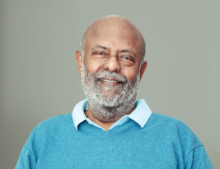

Mukesh Dhirubhai Ambani (born 19 April 1957) is an Indian businessman and the chairman and managing director of Reliance Industries. With an estimated net worth of $123.3 billion as of July 2024, he is the richest person in Asia and 11th richest in the world. Sometimes characterized as a plutocrat, he has attracted both fame and notoriety for reports of market manipulation, political corruption, cronyism, and exploitation. Mukesh Dhirubhai Ambani was born on 19 April 1957 in the British Crown colony of Aden (present-day Yemen) into a Gujarati Hindu family to Dhirubhai Ambani and Kokilaben Ambani. He has a younger brother Anil Ambani and two sisters, Nina Bhadrashyam Kothari and Dipti Dattaraj Salgaonkar Ambani lived only briefly in Yemen because his father decided to move back to India in 1958 to start a trading business that focused on spices and textiles. The latter was originally named "Vimal" but later changed to "Only Vimal". His family lived in a modest two-bedroom apartment in Bhuleshwar, Mumbai until the 1970s. The family's financial status slightly improved when they moved to India but Ambani still lived in a communal society, used public transportation, and never received an allowance. Dhirubhai later purchased a 14-floor apartment block called 'Sea Wind' in Colaba, where Ambani and his brother lived with their families on different floors. Ambani attended the Hill Grange High School at Peddar Road, Mumbai, along with his brother and Anand Jain, who later became his close associate. After his secondary schooling, he studied at St. Xavier's College, Mumbai. He then received a BE degree in chemical engineering from the Institute of Chemical Technology. Ambani later enrolled for an MBA at Stanford University but withdrew in 1980 to help his father build Reliance, which at the time was still a small but fast-growing enterprise. His father felt that real-life skills were harnessed through experiences and not by sitting in a classroom, so he called his son back to India from Stanford to take command of a yarn manufacturing project in his company. Ambani was influenced by his teachers William F. Sharpe and Man Mohan Sharma because they are "the kind of professors who made you think out of the In 1981, Ambani was pulled out of Stanford by his father Dhirubhai Ambani to help run their family business (Reliance Industries Limited). Mukesh Ambani set up Reliance Infocomm Limited (later Reliance Communications Limited), which was focused on information and communications technology initiatives.At the age of 24, Ambani was given charge of the construction of Patalganga petrochemical plant when the company was heavily investing in oil refinery and petrochemicals. Ambani directed and led the creation of the world's largest grassroots petroleum refinery at Jamnagar, India, which could produce 660,000 barrels per day (33 million tonnes per year) in 2010, integrated with petrochemicals, power generation, port, and related infrastructure.[25] In December 2013 Ambani announced the possibility of a "collaborative venture" with Bharti Airtel in setting up digital infrastructure for the 4G network in India.[26] On 18 June 2014, Mukesh Ambani said he will invest Rs 1.8 trillion (short scale) across businesses in the next three years and launch 4G broadband services in 2015. Through Reliance, he also owns the Indian Premier League franchise Mumbai Indians and is the founder of the Indian Super League, a football league in India. In 2012, Forbes named him one of the richest sports owners in the world. He resides at the Antilia, one of the world's most expensive private residences with its value reaching $4.6 billion in 2023.

Gautam Shantilal Adani (born 24 June 1962) is an Indian businessman who is the founder and chairman of the Adani Group, a multinational conglomerate involved in port development and operations in India.Adani has been described as being close to Prime Minister Narendra Modi and to his ruling Bharatiya Janata Party government. This has led to allegations of cronyism, as his firms have won many energy and infrastructure contracts in India and abroad after Modi became the Prime Minister of India. In January 2023, the American short selling activist firm Hindenburg Research accused Adani of stock manipulation and fraud. In January 2024, the Supreme Court resolved the Adani Group stocks dispute arising from Hindenburg Research's allegations. The Court dismissed requests for an SIT or CBI investigation. Adani and his family's fortune has plummeted by over 50% to an estimated US$54.2 billion, as of October 2023, while falling to the 23rd place on the Forbes Real Time Billionaires list. As of February 2024, his fortune was estimated to be US$82.3 billion, placing him at the 16th place on the Forbes Real Time Billionaires list.In 2022, Times Magazine included him in the 100 most influential people in the world. In June 2024, Gautam Adani surpassed Mukesh Ambani to become the richest person in Asia. According to the Bloomberg Billionaires Index, Adani's net worth reached $111 billion, making him the 11th richest individual globally. Gautam Adani is married to Priti Adani. The couple have two sons, Karan, who is CEO of Adani Ports & SEZ, and Jeet. In January 1998, Adani and an associate, Shantilal Patel, were allegedly abducted and held hostage for ransom, Two former gangsters Fazl-ur-Rehman and Bhogilal Darji, were accused of the kidnapping. They were acquitted in an Indian court in 2018, after Adani and Patel did not show up for depositions, despite multiple summons by the court. Adani was in the restaurant of Taj Mahal Palace Hotel in Mumbai having dinner with another businessman at 21:50 on 26 November 2008 when the hotel was attacked by terrorists. The terrorists were only 15 feet (4.6 m) away from them. Adani hid in the hotel kitchen and later in the toilet and came out safely at 08:45 the next day. Adani prefers to keep his personal life away from the media[63] but is widely known for being close to Indian Prime Minister Narendra Modi and his ruling Bharatiya Janata Party. This has led to allegations of cronyism as his firms have won many Indian energy and infrastructure government contracts.[7] An Indian government auditor accused Modi in 2012 of giving low cost fuel from a Gujarat state-run gas company to Adani and other businesspeople.[64] Adani and Modi have both denied allegations of cronyism.[6] The Economist has described Adani as "a master operator", skilled at "navigating the complicated legal and political landscape of Indian capitalism," although the magazine cautions that his firm is known for its "Byzantine" structure and opaque finances. As a teenager, Adani moved to Mumbai in 1978 to work as a diamond sorter for Mahendra Brothers.[25] In 1981, his elder brother Mahasukhbhai Adani bought a plastics unit in Ahmedabad and invited him to manage the operations. This venture turned out to be Adani's gateway to global trading through polyvinyl chloride (PVC) imports.[23] In 1985, he started importing primary polymers for small-scale industries. In 1988, Adani established Adani Exports, now known as Adani Enterprises, the holding company of the Adani Group. Originally, the company dealt in agricultural and power commodities.[23] In 1991, the economic liberalisation policies turned out to be favourable for his company and he started expanding the businesses into trading of metals, textiles, and agro products.[23][26] In 1994, the Government of Gujarat announced managerial outsourcing of the Mundra Port and in 1995, Adani obtained the contract.[4] In 1995, he set up the first jetty. Originally operated by Mundra Port & Special Economic Zone, the operations were transferred to Adani Ports & SEZ (APSEZ). Today, the company is the largest private multi-port operator. Mundra Port is the largest private sector port in India, with the capacity of handling close to 210 million tons of cargo per annum.
Shiv Nadar (born 14 July 1945) is an Indian billionaire businessman and philanthropist. He was the founder and chairman of HCL Technologies, and is chairman of the Shiv Nadar Foundation. Nadar founded HCL in the year 1976 and transformed the IT hardware company into an IT enterprise over the next three decades. In 2008, Nadar was awarded Padma Bhushan for his efforts in the IT industry. Nadar, nicknamed by friends as Magus (Old Persian for "wizard"), since the mid-1990s he has focused his efforts on developing the educational system of India through the Shiv Nadar Foundation. According to Forbes, he has an estimated net worth of US$34.2 billion as of July 2024. Nadar began his career at Walchand group's Cooper Engineering Ltd. in Pune in 1967. he soon gave it up to begin his own venture, in partnerships with several friends and colleagues. These partners were Ajai Chowdhry (Ex-Chairman, HCL), Arjun Malhotra (CEO and chairman, Headstrong), Subhash Arora, Yogesh Vaidya, S. Raman, Mahendra Pratap and DS Puri. The initial enterprise which Nadar and his partners began was Microcomp, a company which focused on selling teledigital calculators in the Indian market. HCL was founded in 1976, with an investment of Rs. 187,000. In 1980, HCL ventured into the international market with the opening of Far East Computers in Singapore to sell IT hardware. The venture reported Rs 1 million in revenue in the first year and continued to address the Singapore operations. Nadar remained the largest shareholder without retaining any management control. In July 2020, Nadar handed over to his daughter Roshni Nadar, who became the first woman chair of a listed Indian IT company. In July 2021, Nadar also stepped down as managing director of HCL Technologies, and was succeeded by C Vijayakumar, HCL Tech CEO, for a five-year term. In October 2021, he was ranked by Forbes magazine as the third richest person in India with an estimated net worth of US$31 billion. In 1996, Nadar founded SSN College of Engineering in Chennai, Tamil Nadu[24] in the name of his father, Sivasubramaniya Nadar. Nadar took an active role in the college activities, including the gifting of Rs. 10 lakh worth of HCL shares to the college.[25] In 2006, Nadar announced that the college will promote research apart from ensuring that students benefit from foreign university tie-ups. Nadar joined the executive board of Indian School of Business in 2005. In March 2008, Nadar's SSN Trust announced the setting up of two Vidyagyan schools in Uttar Pradesh for rural students, where free scholarship for 200 students from 50 districts of the state. He visited Town Higher Secondary School in February 2011 and donated computers and other equipment worth Rs. 80 lakh. He served as chairman of the board of governors, Indian Institute of Technology Kharagpur (IIT Kharagpur or IIT-KGP), a technical institute until 2014. Nadar's daughter Roshni Nadar is now chairwoman of HCL. She was the manager of HCL when Siva Nadar started it in the 1990s.[29] His wife, Kiran Nadar, is an art collector and philanthropist.[30] Shiv Nadar and his wife Kiran Nadar are also active Bridge players and sponsors of the famous HCL Bridge Tournament in India In 2008, the Government of India awarded him with a Padma Bhushan, the third highest civilian award, for his contribution to the IT industry.[31] In 2007, Madras University awarded him an honorary doctorate degree.[32] Shiv Nadar was awarded E&Y Entrepreneur of the Year 2007 (Services).[33] In 2011, he was counted amongst Forbes' 48 Heroes of Philanthropy in Asia Pacific.[34] In April 2017, India Today magazine ranked Nadar #16th in India's 50 most powerful people of 2017 list.[35] Shiv Nadar has committed more than $1 billion to philanthropy.
